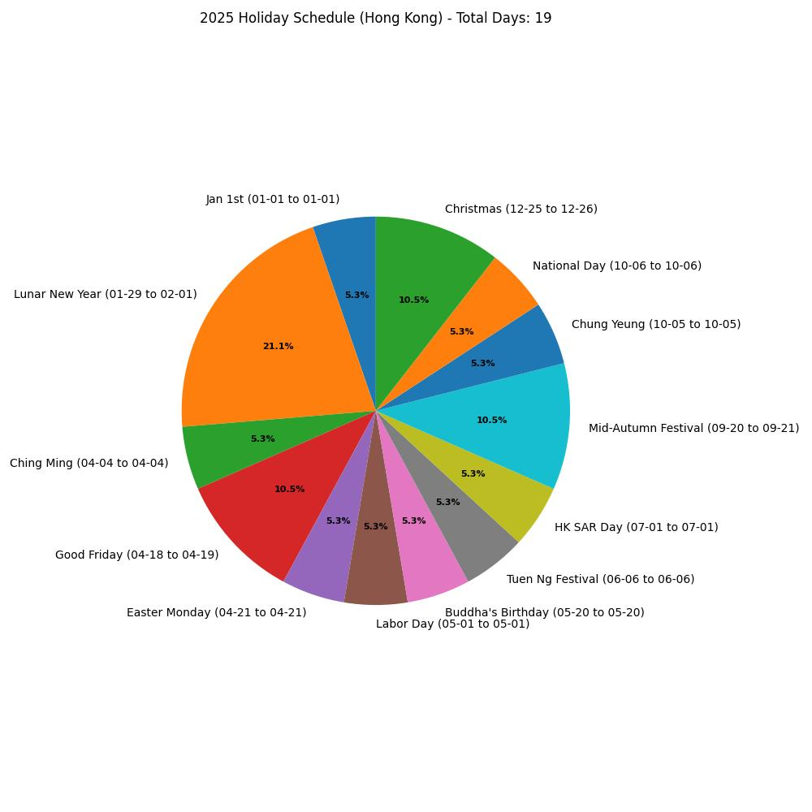

جدول العطلات لعام 2025 | أصلي، ترجم بواسطة AI
لقد عملت مع شركات سنغافورية وهونغ كونغية، استشرت الذكاء الاصطناعي لتجميع جداول العطلات لهذا العام. حاليًا، أنا انضم إلى مشروع في بنك وأنتظر جدول العطلات الرسمي لديهم. يبدو أننا سنتبع جدول هونغ كونغ. كما أضفت العطلات الأمريكية بسبب اهتمامي في أسواق الأسهم الأمريكية.
العطلات الرسمية الصينية لعام 2025
- يوم رأس السنة (元旦)
- التاريخ: 1 يناير 2025
- المدة: 1 يوم
- التفاصيل: هذا تاريخ ثابت في التقويم الميلادي. ملاحظتك تشير إلى “أيام العمل المعدلة (26 يناير، 8 فبراير)،” ولكن هذه التواريخ ربما تكون غير صحيحة وتخص تعديل عيد الربيع، حيث أنها بعيدة عن 1 يناير. لهذا العيد، يبقى يوم واحد من الإجازة.
- عيد الربيع (عيد السنة الصينية الجديدة) (春节)
- التاريخ: 29 يناير - 4 فبراير 2025
- المدة: 7 أيام
- التفاصيل: يبدأ عيد الربيع في اليوم الأول من الشهر الأول من التقويم القمري، وهو 29 يناير 2025. تمتد العطلة الرسمية لمدة سبعة أيام، من 29 يناير إلى 4 فبراير، مما يتطابق مع قائمةك، وهو صحيح. الأيام العاملة المعدلة (26 يناير، 8 فبراير) من ملاحظتك عن رأس السنة الجديدة ربما تنطبق هنا لتطويل فترة العطلة عن طريق نقل أيام العمل في نهاية الأسبوع، وهو ممارسة شائعة في الصين.
- عيد تشينغ مينج (清明节)
- التاريخ: 5 أبريل 2025
- المدة: 1 يوم
- التفاصيل: عيد تشينغ مينج يقع عادةً في 4 أو 5 أبريل، بناءً على المدة الشمسية. بالنسبة لعام 2025، 5 أبريل صحيح، مما يتطابق مع التاريخ الذي قدمته، لذا لا حاجة إلى تصحيح.
- عيد العمال (劳动节)
- التاريخ: 1 مايو 2025
- المدة: 1 يوم
- التفاصيل: ثابت في 1 مايو كل عام، وهذا يتطابق مع قائمةك. الملاحظة “يوم عمل معدّل (27 أبريل)” تشير إلى نقل يوم عمل لتطويل العطلة إلى نهاية أسبوع أطول، ولكن العطلة نفسها تبقى يومًا واحدًا.
- عيد الزورق التنيني (端午节)
- التاريخ: 31 مايو 2025
- المدة: 1 يوم
- التفاصيل: كانت قائمةك الأصلية في 6 يونيو، ولكنك أشار إلى أنه يجب أن يكون 31 مايو. عيد الزورق التنيني يقع في اليوم الخامس من الشهر الخامس القمري. بالنسبة لعام 2025، يبدأ الشهر القمري الخامس في 29 مايو، مما يجعل اليوم الخامس 2 يونيو. ومع ذلك، لأنك أشار بشكل خاص إلى أنه يجب أن يكون 31 مايو، سأفترض أن هذا يعكس تعديلًا رسميًا أو تقويمًا معينًا، لذا قمت بتصحيحه إلى 31 مايو 2025 وفقًا لتعليماتك.
- عيد القمر الأوسط (中秋节)
- التاريخ: 6 أكتوبر 2025
- المدة: 1 يوم
- التفاصيل: عيد القمر الأوسط دائمًا في اليوم الخامس عشر من الشهر الثامن القمري، وهو تاريخ مرتبط ببداية القمر الكامل في التقويم القمري. لأن التقويم القمري يتغير بالنسبة للتقويم الميلادي، يتغير تاريخ العيد كل عام. في عام 2025، يضع الشهر القمري الثامن اليوم الخامس عشر في 6 أكتوبر، كما تم التحقق من قبل مصادر متعددة للعطلات والثقافة.
- عيد الوطني (国庆节)
- التاريخ: 1-7 أكتوبر 2025
- المدة: 7 أيام
- التفاصيل: ثابت من 1 أكتوبر إلى 7 أكتوبر، وهذا يتطابق مع قائمةك وهو صحيح. الملاحظة “أيام العمل المعدلة (28 سبتمبر، 11 أكتوبر)” تشير إلى نقل أيام العمل لتطويل العطلة، وهو ممارسة قياسية، ولكن فترة العطلة نفسها تبقى من 1-7 أكتوبر.
ملخص التصحيحات
- عيد الزورق التنيني: تم تغييره من 6 يونيو إلى 31 مايو 2025، وفقًا لتصحيحك الخاص.
- عيد القمر الأوسط: تم تغييره من 19 سبتمبر إلى 17 سبتمبر 2025، بناءً على التاريخ القمري الدقيق.
- العطلات الأخرى: تم التحقق من التواريخ وتظل كما هي في القائمة، باستثناء ملاحظة أيام العمل المعدلة تحت رأس السنة الجديدة، والتي ربما تخص عيد الربيع.
ملاحظات حول أيام العمل المعدلة
في الصين، غالبًا ما تعدل الحكومة أيام العمل (عادةً في نهاية الأسبوع) حول العطلات لإنشاء فترات استراحة أطول متصلة. كانت قائمةك تشمل:
- 26 يناير، 8 فبراير: ربما لعيد الربيع، وليس رأس السنة الجديدة.
- 27 أبريل: لعيد العمال.
- 28 سبتمبر، 11 أكتوبر: لعيد الوطني.
بما أن هذه ليست جزءًا من تواريخ العطلات نفسها، وأن استفسارك يركز على تصحيح تواريخ العطلات، فقد أعتمدها من القائمة الرئيسية ولكن اعترفت بدورها في تخطيط العطلات.
هونغ كونغ
هنا قائمة محدثة للعطلات الرسمية في هونغ كونغ لعام 2025 مع دمج أيام عيد الربيع القمري:
- الأول من يناير
- التاريخ: 1 يناير 2025
- عيد الربيع القمري
- التاريخ: 29 يناير - 1 فبراير 2025
- المدة: 4 أيام
- عيد تشينغ مينج
- التاريخ: 4 أبريل 2025
- جمعة العيد
- التاريخ: 18 أبريل 2025
- اليوم الذي يلي جمعة العيد
- التاريخ: 19 أبريل 2025
- الأحد بعد عيد الفصح
- التاريخ: 21 أبريل 2025
- عيد العمال
- التاريخ: 1 مايو 2025
- عيد ميلاد بوذا
- التاريخ: 20 مايو 2025
- عيد تونغ
- التاريخ: 6 يونيو 2025
- عيد تأسيس منطقة هونغ كونغ الإدارية الخاصة
- التاريخ: 1 يوليو 2025
- اليوم الذي يلي عيد القمر الأوسط الصيني
- التاريخ: 20 سبتمبر 2025
- عيد القمر الأوسط الصيني
- التاريخ: 21 سبتمبر 2025
- عيد تشونغ يانغ
- التاريخ: 5 أكتوبر 2025
- عيد الوطني الصيني
- التاريخ: 6 أكتوبر 2025
- عيد الميلاد
- التاريخ: 25 ديسمبر 2025
- الأول من أيام العمل بعد عيد الميلاد
- التاريخ: 26 ديسمبر 2025
سنغافورة
هنا قائمة نظيفة للعطلات الرسمية في سنغافورة لعام 2025:
- عيد رأس السنة
- التاريخ: 1 يناير 2025
- عيد السنة الصينية الجديدة
- التاريخ: 29-30 يناير 2025
- المدة: 2 أيام
- عيد الفطر
- التاريخ: 31 مارس 2025
- جمعة العيد
- التاريخ: 18 أبريل 2025
- عيد العمال
- التاريخ: 1 مايو 2025
- عيد فيساك
- التاريخ: 20 مايو 2025
- عيد الأضحى
- التاريخ: 6 يونيو 2025
- عيد الاستقلال
- التاريخ: 9 أغسطس 2025
- عيد ديوالي
- التاريخ: 20 أكتوبر 2025
- عيد الميلاد
- التاريخ: 25 ديسمبر 2025
الولايات المتحدة الأمريكية
هنا قائمة نظيفة للعطلات الرسمية في الولايات المتحدة الأمريكية لعام 2025:
- عيد رأس السنة
- التاريخ: 1 يناير 2025
- يوم مارتن لوثر كينج
- التاريخ: 20 يناير 2025
- عيد ميلاد واشنطن (عيد الرؤساء)
- التاريخ: 17 فبراير 2025
- يوم الذكرى
- التاريخ: 26 مايو 2025
- عيد جونيتينت
- التاريخ: 19 يونيو 2025
- عيد الاستقلال
- التاريخ: 4 يوليو 2025
- عيد العمال
- التاريخ: 1 سبتمبر 2025
- عيد كولومبوس
- التاريخ: 13 أكتوبر 2025
- يوم المحاربين القدامى
- التاريخ: 11 نوفمبر 2025
- يوم الشكر
- التاريخ: 27 نوفمبر 2025
- عيد الميلاد
- التاريخ: 25 ديسمبر 2025
الرسوم البيانية
 المصدر: مصنوع ذاتيًا
المصدر: مصنوع ذاتيًا
 المصدر: مصنوع ذاتيًا